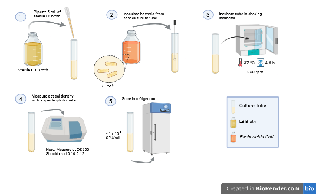
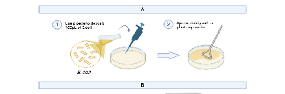
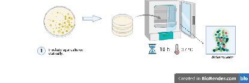
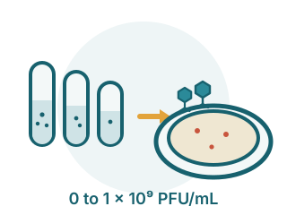
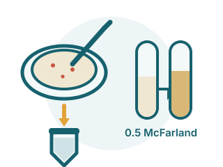
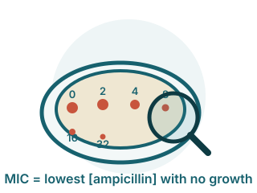

Biofilms were grown for 18 hours, treated with a range of phage T4 doses, then tested against an ampicillin dilution series.
| Step | Procedure | Image |
|---|---|---|
| 1 |
Grow the liquid culture
|
 |
| 2 |
Pour the Mueller-Hinton plates
|
|
| 3 |
Inoculate and spread the biofilm
|
 |
| 4 |
Mature the biofilm
|
 |
| 5 |
Expose the biofilms to phage T4
|
 |
| 6 |
Collect and standardize
|
 |
| 7 |
Spot and read the MIC
|
 |
Protocol diagrams (Figure 1 and Figure 2) were created with BioRender.